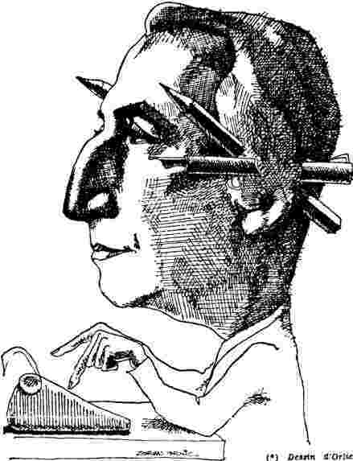
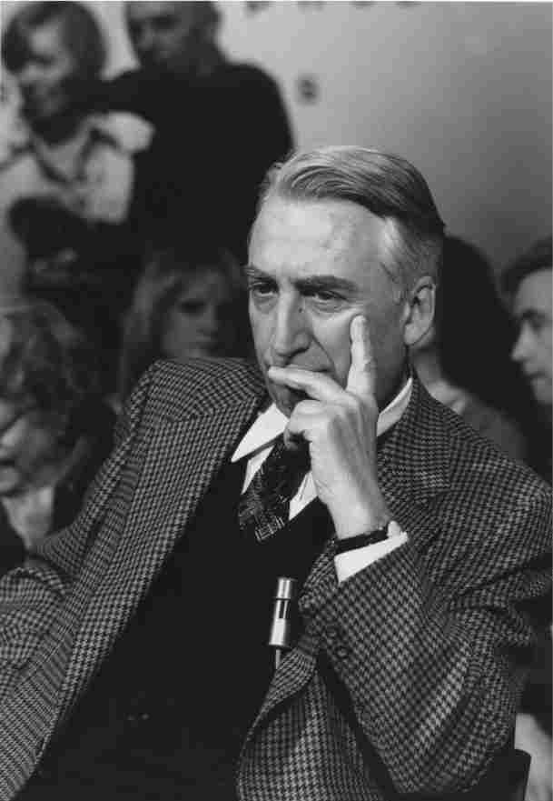

巴特去世之后，他的名望发生了什么变化？至少有三件事值得关注。1987年，巴特的文学遗嘱执行人弗朗索瓦·瓦尔以巴特的名义出版了一本很薄的小册子，名为《事件》。它包括四篇文章，其中两篇非常短，另外两篇稍长。瓦尔声称，这些文章都体现了写作试图抓住直接体验的努力（第7页）。 [25] 瓦尔出版此书的举动引发了极大的争议，因为篇幅稍长的两篇文章《事件》和《巴黎之夜》涉及巴特的同性恋行为，这是他本人在那些最具自传色彩的作品中也刻意避免的话题。《事件》以速写的风格，记录了巴特于1968年和1969年在摩洛哥时的见闻片段——大多数片段只有几个句子——其中提到的摩洛哥男孩引人注目。安德雷·纪德在日记中曾记录了他本人在北非地区的同性恋行为，巴特的文本一定程度上受其影响，他没有展开叙述，而是以简洁的片段来假定（而非描述）同性恋体验：“穆斯塔法深爱着他的帽子。‘我的帽子——我爱它。’他不愿意摘下帽子来做爱”（《事件》，第30/19页）。《罗兰·巴特自述》中曾描述过一本书的写作计划，书名就叫“《事件》（迷你文本，俏皮话，俳句，符号体系，双关语，任何像树叶那样坠落的事物）”，瓦尔发表的文本显然与此有关（第153/150页）。但正因为《事件》缺少大事、双关语、笑话，而且它的符号体系在形式上也与俳句相去甚远，因此那些简洁的观察记录背后所潜藏的性爱场景自然就引起了读者的注意。
瓦尔发表的另一个文本引发了更强烈的兴趣，同时也让更多人觉得失望，那就是《巴黎之夜》（巴特所用的标题是《毫无意义的夜晚》）。这些文字写于巴特去世当年的夏天，记录了他在巴黎的夜生活：与朋友聚餐，看电影，在小餐馆打发时间，时而漫不经心地与一些年轻男子套近乎，时而又觉得那些年轻男子的亲近让人烦恼，宁愿不受打扰，一个人安静地看报纸。之前在一篇题为《仔细考虑》的文章中，巴特曾思考过日记这一体裁：我应该带着准备发表的念头来记日记吗？他列举了种种缺陷：日记没有“任务”，没有必要性；它迫使写作者摆出种种姿态，却又以其琐碎、卑微和虚假的特性不断提出一个滑稽的问题：“我是这样吗？”（《语言絮谈》，第435——438/369——372页）。但看起来正是这些缺陷吸引巴特尝试了日记体裁。由这些不起眼的片段所组成的符号体系成为一种“几乎不可能”的写作形式，它的魅力来自它所拒绝的一切：意义、连贯性、情节、整体结构。
不过，在具体实践中，《巴黎之夜》对朋友的身份遮遮掩掩（用首字母来代表），这反而增添了它的诱惑力，而那些朋友们则恼火地发现，巴特与他们共同度过的那些夜晚被描述为“空虚的”时光。这篇文章最勾引人的地方在于它散漫的写法。这位著名的知识分子对他的巴黎夜生活和半真半假寻找同性伴侣的做法感到厌倦，这幅颓唐的场景以一段清醒的思考来收尾：
第115——116/73页
图18 1973年，在高等实用研究院。
本书以此作结：巴特并没有说他的生活中“不再有男孩”，而是说他不可能再爱上任何一个男孩或是接受对方的爱慕。
如果说弗朗索瓦·瓦尔决定出版这些文本的举动惹来了争议（它们改变了巴特的公共形象），他在其他方面也让人生厌：他不允许路易——让·卡尔韦这样一位研究细致、资料充分的传记作者引用巴特的大量信件，他还拒绝出版巴特在法兰西学院的讲座文稿，虽然这些内容原本就以文字形式存在，并且受到广泛关注。1991年，洛朗·迪斯波在《游戏规则》杂志上发表了讲座文稿的部分内容，结果这份杂志遭到巴特遗产继承人的起诉，他们声称要保护巴特作为作者的权利（讽刺的是，正是巴特宣告了作者的死亡），这一举动在巴黎的知识圈中激起极大反响，许多人公开支持《游戏规则》杂志，其中包括菲利普·索尔莱斯和茱莉亚·克里斯蒂娃。 [26]
对于那些没能参加讲座的人来说，讲座文稿不能出版是个令人沮丧的消息，因为巴特谈到了一些他在公开出版的作品中没有涉及的主题。其中一个讲座系列名为“如何共同生活：小说对于日常生活某些方面的仿拟”（1977），巴特谈到小说如何来表征日常生活的空间以及生活行为的惯例，他讨论的例子包括鲁宾逊·克鲁索的小屋、《魔山》中的旅社以及左拉笔下的资产阶级公寓楼。另一个讲座系列以“中性”（1978）作为主题，所谓“中性”指的是中性名词或中立状态、中性化的行为以及对于二元对立的超越或回避，之前《罗兰·巴特自述》曾对此做过简要论述。第三和第四个系列都将重点放在“小说的准备工作”上，题目分别是“从生活到工作”（1978——1979）和“作为自愿选择的工作”（1979——1980），它们从作者（而不是读者）的角度来分析文学创作。 [27] 第一年，这门课程重点研究俳句作为产生次要影响的符号体系形式；第二年，研究作者的创作意愿以及由此所引出的仪式性习惯，讨论的内容包括普鲁斯特的软木贴面的房间以及巴尔扎克的晨袍和无节制地喝咖啡的习惯。这些思考引起了人们的强烈兴趣，因为正是巴特本人宣告了作者的死亡，他认为这是读者诞生的必然代价，只有通过具有能动性的读者我们才能更好地理解文学作品的运作。人们希望瓦尔最终能出版这些文本，从而推动对于巴特的研究兴趣，就像拉康的那些讲座一样，到现在为止依然在陆续出版。

图19 《世界报》，1975年2月14日。
巴特去世二十年后，他的形象发生了怎样的变化？最简单的答案就是：他变成了一个作家。他的《全集》包括厚厚的三卷本，每卷超过一千页，已经由长期与他合作的门槛出版社出版（这是我提到的第三件编辑大事）。《全集》将巴特原先赖以成名的个别著作淹没在浩瀚的文字海洋里：随笔、前言、对于访谈问题的回应、讲座内容和纲要，还有许多短小的新闻作品。三卷本展示了巴特持续的创作，不仅作为思想家和文人，而且作为作家，这重身份是这些文字的共同源泉。三卷本还表明，巴特多么喜欢特定任务的激励。虽然他不擅长拒绝别人，总是抱怨自己被迫接受许多写作任务，但正是这些要求和任务促使他妙语连珠地谈论某个给定的主题，最终形成的文稿带有他特有的风格，优雅从容，不迎合大众的看法（或者说，信念）。
《全集》收录了巴特散见于各类出版物中的文字，从而巩固了他的作家形象，这些文字不仅限于法国本土，而且涵盖了巴特在国外发表的作品，涉及的报刊杂志包括《世界报》、《邦皮亚尼年鉴》、《它》、《相片》、《艺术出版》、《花花公子》、《变焦》、《意大利新音乐》、《男性时尚》等，此外还有大量的博物馆和展览会目录。它们展示了巴特在文化领域内的广泛兴趣，他对视觉艺术、音乐和当代文学都有所涉猎。不过巴特从没有写过负面评论，他不愿充当文化权威。事实上，他向来与人无争，虽然他的评语总是引发别人的争论。（皮卡尔对于《论拉辛》的强烈批评迫使巴特卷入争端，这对于他来说是巨大的烦恼。）由于最宽泛的理论设想（哪怕是文化权威提出的设想）也无法同时涵盖这些作品，所以只好把这些作品笼统地称为作家的创作成果。
如果非要给这一设想加个名字，我们可以称之为当代生活的人类学研究。巴特对于各种实践和文化创造都很感兴趣，20世纪50年代他收录在《神话学》中的文章表明了这一点，只不过他随后所写的文章缺少一篇专论来勾勒自己的理论规划。在巴特去世的当月，《花花公子》杂志发表了一篇他的访谈，讨论作为一种宗教现象的节食行为，包括信仰转变、经文、负罪感、回归预定道路等。“养生法让人产生强烈的犯罪感，感受到罪孽的威胁，这种感觉发生在日常生活的每一刻。只有当你熟睡的时候，你才能确信你没有造成罪孽。”他说，应该写一本书，“就节食这一现象及其神话”。 [28] 这番话依然带有批判的意味，但更像是在针对美国人的看法和习惯（正如关于节食的访谈所示），或者是在针对法国的知识分子而不是资产阶级大众，后者曾是巴特写作《神话学》时的批判对象。巴特写道，长久以来，他一直认为知识分子应该为消除文化神话而奋斗；现在虽然他依然为此而努力，但他的心已经不在这里。权力无处不在，当代主体避免不了恢复常态的宿命。“唯一的办法就是让人们听到一个具有偏向性、存在于其他地方、不附带任何关系的声音。” [29] 但不附带任何关系显然是种乌托邦式的幻想。
在1978年至1979年间，巴特为《新观察者》撰写简短周评，为期三个半月，评论的主题是任何给他留下深刻印象的事物——他谈到冬季的樱桃和过度包装现象，还向一位正在狱中的作家表示了支持。在他即将停止实验的时候，他解释说，这些短评并不是新版《神话学》，而是关于写作的实验，他要寻求一种形式，来记录那些称不上大事件却给他留下深刻印象的生活点滴。通过这些尝试，他要“让那些构成我的多种声音得以说话”。 [30] 从中可以发现与《事件》和“小说的准备工作”相同的想法，那就是对于日常生活中的次要话语所产生的兴趣，这些话语并不构成连贯的情节，却提供了意义的质感。“在乡下的时候，我喜欢在户外的花园里撒尿，”他写道，“我想知道这一举动究竟意味着什么。”
1978年，巴特在巴黎和纽约两地都举办了讲座，他出色的口才给听众留下了深刻印象，讲座的题目是“在很长的一段时间里，我早早就睡了”。这是普鲁斯特的小说《追忆似水年华》的开场白。重复普鲁斯特的文字显示了巴特的决心，他想要追随普鲁斯特——不是“追随那部皇皇巨著的伟大作者，而是追随那个肩负起工作任务的人：时而饱受折磨，时而欢欣雀跃，在任何情况下都保持谦和——他想要担负重任，从计划的一开始，他就赋予这项任务以绝对的个性”（《语言絮谈》，第334/277——278页）。三十多岁的普鲁斯特当时还在小说与散文创作之间纠结，但突然——我们不知道确切原因——到了1909年夏季，一切都各就各位。他找到了“第三种形式”，他对于时间做了特殊处理，并且让叙事者来阐述他本人的写作欲望，通过这些手法，普鲁斯特得以“消除小说与散文之间的矛盾”（第336——340/280——284页）。据巴特推测，普鲁斯特母亲的去世，让他意识到有必要寻找一种新的写作方式。巴特的母亲也刚去世不久，因此他认为自己与普鲁斯特有着相似的处境，准备好迎接“新的生活”（“你知道你难逃一死，突然你感觉到生命的脆弱”）。巴特认为自己将沿着不断重复的人生轨迹走向死亡（又一篇文章，又一次讲座），他写道：“我必须走出那种阴影状态（中世纪理论将它称为‘厌倦’），一再重复的任务和悼念让我深陷其中。现在我觉得，对于这个写作主体来说，对于这个选择了写作的主体来说，不可能有‘新的生活’，除非他能发掘出一种新的写作实践”（第342/286页）。
普鲁斯特寻找并且发现了“一种写作形式，能容纳并超越苦难”（第335/279页）。巴特认为，普鲁斯特的《追忆似水年华》中叙事者的祖母去世的片段和托尔斯泰的《战争与和平》中安德烈王子死亡的片段是两大“真相时刻”，在这些场景中“文学与情感宣泄突然同时迸发，读者在心底里发出一声‘呐喊’，他们或是想起，或是预见自己和心爱的人永远别离时的心情，某种超验的感悟浮现在心头：究竟是什么样的魔鬼同时 创造了爱情和死亡？”（第343/287页）。虽然说，如今人们对于唤起怜悯的艺术手法嘲弄有加，但小说“却借人物之口来谈论情感，从而可以公然吐露那种感受：在小说中，可以谈论那些让人怜悯的对象”（第345/289页）。作家将尘世间的一切失落储存起来，而爱情、怜悯和激情等情感要素带给了作品活力。这就是文学的视野，它支持新的生活 ，而这种新的生活又把文学当作它包容一切的生活体验。
巴特最后问道：这是否意味着我将会写一部小说？“我怎么知道？”他说，我知道的是，“对于我来说，重要的是装作 自己应该写这部乌托邦小说”。这就要求把他自己放在一个特殊的位置，成为“创作的主体，而不是评论的主体。我不是在研究某个产品，而是承担起生产的重任……我假定自己要写一部小说，因此我可以对这部小说了解更多，而不仅仅是把它作为其他人已经创作完成的某个研究对象”（第345——346/289——290页）。
这是巴特最为雄辩、动人和睿智的散文作品之一，它促使人们关注他可能撰写的小说以及他在讲座中提到的“小说的准备工作”。不过，这篇文章的力量与它对于他人小说的敏锐分析和它提出的小说理论有着密切联系，它尤其关注普鲁斯特的写作技巧：巴特写道，对于小说的“怜悯”理论或历史（以怜悯的表述为重点）来说，我们“不要再把一本书的关键放在结构上；正相反，必须承认作品要想打动人，要想活起来，要想生根发芽，就必须借助某种形式的‘崩溃’，在‘崩溃’之后只剩下某些时刻，这些时刻严格说来就是作品的巅峰……”（第344/287页）。这是一个关于小说的重要声明，当然也不无争议，我们不禁要问，这些“巅峰”时刻的力量难道不是以各种形式取决于它们与作品其他部分的联系吗？无论如何，这绝对是一个重要的批评意见，只不过它关注的是那些业已完成的伟大作品的本质，而不是某个在创作中挣扎的作家的眼界。每当巴特构建起一组对立项——比如“担负起生产任务”而不是“研究产品”——他本人的批评实践就会扰乱这样的对立。
这篇很有说服力的文章宣称要转向一种新的生活，开始新的写作实践，以新的视角来看待写作。而且，它赋予“新的生活”这一文本以特殊意义，这份文稿由八个长度不超过一页纸的提纲组成，它在巴特的手稿中被发现，并且作为最后一批文件以影印件的形式收录在《全集》中。很显然，如标题所示，这份文稿涉及巴特原本打算写的一本书，主题是转向新生活的可能性。文稿以他对于母亲的悼念开始（在其中一个版本中她扮演着引路人的角色，就像但丁作品中的维吉尔），随后巴特将世界视为一个景观，同时也是漠然的一个客体（《毫无意义的夜晚》将被收录在这一部分），并且详细描述了他的好恶。接着他将讲述他称之为“1978年4月15日做出的决定”。我们不能确定是否真的存在这样一个重要决定（将时间浓缩为某一天的做法让人怀疑，或许这是巴特为便于叙事而采取的虚构手段），不过论普鲁斯特的那篇文章让人们有理由接受这样的突然转变。埃里克·马蒂在《新的生活》其中一份计划的手抄本上加了如下脚注：“对于这一‘决定’，我们并不完全了解。但很显然，这是一次神秘的信仰转变，以某种帕斯卡式的方式，转向一种‘新的生活’，在其中‘文学’将是存在的全部。” [31] 这份计划的其中几个版本将文学称为爱情的替代品，并且提出要对可能的文学模式——散文、日记、小说、片段、漫画、怀旧作品——进行深入探讨，分析它们为何失败。最激动人心的时刻将伴随着意志训练（这是生产文学的必要前提）的片段而出现，这种训练的目的是达到纯粹闲散或纯粹舒适，或者说，哲学意义上的平和状态，也被称为“道”或者“中性”。 [32] 在其中一份计划中，巴特提到了海德格尔将意志（它试图改变自然）和向存在开放（即接受现状）相对立的做法。在另一份计划中，他提出要学习托尔斯泰：后者提倡一种道教和基督教意义上的平和状态，通过吸收（而不是反对）邪恶来将其中性化。巴特在后期的一次访谈中提出，“要敢于懒惰！”他分析了懒惰这种不受欢迎的态度所具备的美德，并且思考是否我们在邪恶面前没有懒惰的权利。 [33] 写作这份工作与哲学意义上的闲散正好相反，巴特把一个摩洛哥男孩视为闲散的化身——在《事件》的一个片段中，他对这个令人困惑的说法做了解释：
第57/38页 [34]
这个摩洛哥男孩是否象征着与世无争，通过放弃意志所获得的自我？他是否象征着一种中性状态，这样的中性抹去了构成我们的代码、内在对话和模棱两可的态度？如果真是这样，我们就有了一个野心勃勃的理论设想（它的叙事起到说教作用），一个拥有终端的结构！但《新的生活》的倒数第二份提纲是这样结尾的，“这意味着人们必须放弃新生活叙事中的幼稚看法：青蛙努力吹气，想把自己吹得像[公牛]那样巨大。” [35]
如果巴特的新生活持续下去，超过23个月的话，他会不会真的写一部小说？如果不是死亡阻止了他，《新的生活》会成为巴特写出的伟大作品吗？有两个因素让问题变得更复杂，首先是巴特赞美闲散的做法，他把这种闲散状态界定为意志的对立面，而意志显然是创作任何长篇作品的必要前提。其次，巴特回避了那些产生明确意义的结构，随意地将若干片段放在一起——比如说，按字母顺序排列。他不喜欢他所说的“歇斯底里”，因此如果某些情节或结构包含夸张的，可能产生明确意义的人物，他就会尽量避开它们。
戴安娜·奈特对于《新的生活》做出了最佳研究，她认为我们应该完全相信巴特所说的话——在论普鲁斯特的讲座里，巴特提到，重要的是装作 自己应该写这部乌托邦小说，而不是真正去写。制订写作计划和勾勒某些片段是一回事。真正去写这部作品将会违背它所致力营造的乌托邦本质和禅学原则。
围绕《新的生活》这一文本以及巴特为转向新生活所做的努力而产生的这些问题很有意思，尤其是对于那些想了解巴特的人来说。有个例子可以说明，寻求“中性状态”是巴特丰富多彩的写作生涯中最具统合力的线索。在《罗兰·巴特：朝向中性》一书中，伯纳德·康曼特提出，中性就是“试图回避逻各斯和话语所强加的义务和限制”，“反对一种实践或者将其相对化，这种做法应该致力于建立或接近中性的条件，要把中性理解为意义的极端他者化的机制。” [36] 虽然我们的确可以在巴特的作品中追踪到这一潜在线索，但这种做法很容易被嘲讽为逃避问题，比如自传研究专家菲利普·勒热纳就持这一看法，他在《我也是这样》的其中一章中戏仿了《罗兰·巴特自述》。下面的例子出自按字母顺序排列的一系列片段，标题为《不连贯？》。和《罗兰·巴特自述》一样，作者用第三人称来描述他自己：
勒热纳还写道：“这位已经取得成功的资产阶级不再相信阶级斗争；他爱上了中性 。” [38]
以嘲讽中性 作为结尾，这一做法提醒我们，中性不能与那些受它启发的批评作品割裂开来，否则就会陷入勒热纳所嘲讽的自满窘境。更有益的做法是遵循戴安娜·奈特，而不是伯纳德·康曼特的观点（虽然他们两人观点相近），并且将巴特作品中具有统合力的线索视为一种乌托邦式，而不是寻求中性的努力：理论和批评总是通过某种社会性或情感性乌托邦的隐含形象来运作的，在这种乌托邦形象的比照下，找出现实和现有话语的欠缺之处。 [39] 错误在于，认为这种乌托邦能够实现。
巴特去世后的二十年里所发生的变化可以归结为以下五点：
首先，他的地位发生了巨大变化。1979年，在巴特去世的前一年，韦恩·布斯称他为“如今对于美国批评产生最大影响的人”。我必须指出的是，布斯与其说是在称赞巴特，不如说是在抱怨美国批评屈从于这股歪风邪气。不过，当你在2001年重新读到这番评论时，你会一下子愣住，它让你回想起20世纪70年代巴特曾经有过的重要地位。很难描述那种重要性，这一点本身就很有趣。巴特之所以重要，并非因为他是福柯所说的某种“话语”的创始人，比如弗洛伊德或马克思。在福柯所说的情况下，思想的后续发展形式是对原始文本进行评论或阐释。巴特的重要性也不在于他是某个学派的创始人，他并没有创立某个理论框架，让许多后来者得以在此框架下进行工作（在英美两国有许多“拉康主义者”和“阿尔都塞主义者”，却没有所谓的“巴特主义者”，虽然有许多人，包括我在内，都深受巴特的影响）。此外，巴特也不是所谓的发现者，后者通常凭借自己的洞察力提出重要论断，比如，本尼迪克·安德森就被别人广泛征引，他告诉我们，民族和其他大型群体都是“想象的共同体”。巴特的特殊意义在于，他的权威性无须理由：当你要写一篇评论文章的时候，不管你的主题是什么，用“罗兰·巴特评论道……”这句话作为开场白总是个好办法；他的重要性就在于，没有人会反驳说：“那又怎么样？”
在文学研究领域内，沃尔特·本雅明继巴特之后获得了类似的权威地位（区别在于，人们花了大量工夫来澄清本雅明的文本）。或许可以把这种权威性称为毫无争议的参照点，具备这种权威足以使人成为重要的思想家和文化人物，但很大程度上巴特已经丧失了这种特权。现在他已经不再是你可以直接引述的大人物。如今，你需要给出理由，说明自己为什么要阅读或者引述他的文本。
其次，谁都知道，巴特首先是个理论家，他写作的年代是“理论”的鼎盛时期，但现在“高深理论”已不再是新鲜事物，不再让人恐惧或受人崇敬。不过巴特同样也是一个抗拒理论的人——尤其是他自己的理论——他努力回避或挫败理论。稍后我还将回到这个话题。
第三，巴特的崇拜者如今不大可能把躁动或变化当成他作品的恒定特征来加以宣扬了：虽然巴特经历了一段多变的发展历程，但评论者已经提出了多种恒定特征，包括乌托邦式的冲动（奈特），寻求中性（康曼特），或试图将知识文学化（菲利普·罗歇）。但这些所谓的恒定因素真的能够抓住巴特最吸引人的地方吗？
第四，D.A.米勒写道，巴特对于书写身体的兴趣可以被视为“男同性恋复兴肉体的文化设想[的一部分]，他的书写为这一设想增添了（或者说从这一设想中挖掘出）一些具有重要意义的细致差别”，尤其是他愿意“思考处于最尴尬状态下、远谈不上‘完美’的身体”。 [40] 将巴特纳入男同性恋美学研究的做法才刚刚起步。

图20 路易-让·卡尔韦写的传记《罗兰·巴特》所使用的护封照片。
最后，或许也是最重要的一点，巴特曾被视为激进人物，是法国文化价值面临的巨大威胁，但如今他已经成为一个文化偶像，代表着许多他曾经危及的文化价值。2000年6月，一篇题为《符号皇帝》的文章发表在《电视全览》杂志上（这是《电视指南》和《纽约时报书评》的杂合），它用这样的标题来缅怀巴特：“热爱语言的人，迷恋句子的人，这位作者运用社会学和精神分析来阐述法国文学，但更重要的是，他有着非同寻常的精致风格。” [41] 这里没有提及巴特如何宣扬先锋文学，批评资产阶级神话，他在索邦的时候让人生厌，他还因为倡导作者之死而臭名昭著。此外，这个标题也回避了符号研究，用社会学的名号来代替。这并非笔误，读者后来会发现，作者提到巴特最终放弃了符号研究这一构想。巴特深爱着我们的语言，其中的精美之处让他魂牵梦萦。在法国，这一举动颇受人尊重，或许有那么一点滑稽，但绝不会让人愤怒或觉得危险。
巴特变成了一个文化偶像，从所谓的激进阶段变为热爱法语，这一转变过程证明，文化在本质上存在于个人主体与精神遗产（以母语为代表）之间的关系，由此巴特的转变更加可贵。“他放弃了结构主义的科学幻想，摆脱了政治与文化斗争中的宣传口号，我们的符号研究者开始了一段新的写作生涯。从今往后，巴特将让罗兰开口说话，他要突出欲望主体，也就是他的个体自我，那个毫无顾忌地热爱着语言和风格的人。”
我引述这段话，不是为了鄙薄，而是因为这段话具有典型的巴特风格，同时他的创作轨迹也为此提供了佐证。如我们所见，他在后期作品中批评了自己“对于科学性的美好梦想”。在早期作品中，虽然他对于二元对立的元语言提出过质疑，但这些对立项（内涵 和外延，隐喻 和转喻，可读 和可写 ）扮演着重要的角色；《罗兰·巴特自述》却把这些对立项嘲讽为“伪造品”，“生产的修辞”，或者说，从其他话语那里窃用的“文本操作手段”，被用作“写作机器”的一部分，目的就是为了“让文本保持运作”（第95/92页）。“因此，作品依靠着概念带来的冲动、持续不断的兴趣和短暂的狂热向前推进”（第114/110页）。
我们不妨就采取这种了然于胸的姿态，称颂巴特作为作者的敏锐洞察力，而不是他作为准理论家的妄断。这一立场很有诱惑力，尤其在当下，当理论的光环已经退去的时候，做一名博学的评论家，并且反对理论的自高自大，这是一个更有利的姿态。但正因为这一观点具有诱惑力，读者更需要反思它的潜在影响——这样的思考可能会从两个方面展开。首先，就像我之前所做的那样，人们或许会问，巴特对于自己早期作品的祛魅行为是不是一种新的神秘化实践，一种只重风格不重实际的做法？考虑到评估人们过去使用的概念存在的困难，宣称这些概念是对于一种潜在写作欲望的迷恋或表露，而这种欲望将作者与其他人联系在一起，这样的想法多么具有诱惑力。这里没有理论，只有写作！巴特嘲弄自己早期所采用的概念，这一做法完全可能创造一种巴特式的神话，关于作家和作者的神话。
这并不是说，巴特不是一个作家，而是说，他是个独具魅力的作家：优雅、独特、大胆自信、不畏批评。不过正如他所言，虽然判断葡萄酒的好坏有客观标准，但这种标准是个神话。我们同样可以说，虽然巴特按照客观标准是个好作者，但巴特这位作者是个神话——是一种意识形态建构，其效果就在于阻碍别人采纳和检验他的说法，阻碍别人使用这些说法并且观察它们在分析我们感兴趣的文化客体和实践时所起到的作用。巴特宣称，他想要写作，不是针对某个对象去写 ，他的写作所具有的力量和兴趣与这些作品对于研究的文化客体所做出的论断密不可分。这一点体现在他后期关于普鲁斯特的杰出评论中，他宣称自己从针对某个主题而写变成为写而写 ；这一点同样也体现在他的早期作品中（这些作品往往接受“生产”这一说法）。
否定过去所使用的概念或理论和褒扬巴特的作者身份，这两种做法实际上是同一枚硬币的两个不同侧面。重要的是，要思考这两点对于评价巴特如今的价值产生了怎样的影响。人们为什么要读他的作品？为了加剧人们的怀疑，认为理论话语真的只是以某种可疑形式呈现的傲慢自负？那样一来，巴特的价值将取决于某个强大的、需要人们学会抗拒的理论，但现实并非如此。正相反，巴特的作品更多在于提醒我们注意思想的探险，并且鼓励我们跳出普遍接受的观念，尝试新的思考。
我认为，巴特的价值，不，应该说巴特的才华并不在于他晚期作品中的博学或感伤，而是在于他的早期作品，在于他为建立科学性所做的尝试。在《文艺批评文集》中，他把作家称为公共实验者，在公开场合，为了公众利益，对思想进行实验（第10/xii页）。在《罗兰·巴特自述》中，他重新回到这一想法：他[巴特]“召唤概念，实验了现代性（就像人们在不知道如何使用收音机的时候，尝试着按下不同按钮）”（第78/74页）。
巴特的才华有一个重要方面，即他发现系统性和对于明确性的要求具有启发作用。正是在他试图创立一种关于研究对象的系统性理论或分析的时候，这一步骤引导他转而研究某些被人忽视的话语中的问题、话题和要素。符号研究的范式提出，存在意义的地方就存在着系统，人们必须辨认出意指行为的不同层面以及每个层面中的能指和所指。因此，这一范式就要求巴特考虑，时装说明文字中每个要素的功能，或者关于天气的闲聊如何反映出人们的社会阶层。以文学为例，《S/Z》采取的逐步递进的办法迫使巴特进行思考，那些细节——既包括最不起眼的部分，也包括最重要的内容——如何根据不同的范式或代码，被挑选、吸收并加以组织。
系统性首先是一种陌生化手法。你必须以新的条目和新的方式来看待事物，并且得出你的结论。因此，不管一种真正的理论能否形成，对于巴特来说，系统化的动力至关重要。当他转而反对系统化的时候，他就可能陷入那些资产阶级的、感伤的写作形式，把他曾经分析过的文化机制重新变成神话。
系统性的一大优点是，我们可以很容易地对巴特所说的“现实效果”进行简单的思考（现在这已经成为法国教育系统的主要内容）。他从福楼拜的短篇故事《简单的心》开始说起，故事中的人物奥班斯的住房墙上挂着一个气压计：“在气压计下，一架旧钢琴上放着一堆金字塔状的盒子和纸箱。”巴特问：气压计起到什么作用？“如果想要做出详尽分析，”他写道，“（如果一种理论不能解释分析对象的整体，也就是说，叙事的整个表层，那么这样的理论有什么价值？……理论不可避免地遇到一些符号体系，它们不承担任何功能（哪怕是最间接的功能）……”（《语言絮谈》，第179——180/141页）。这些符号体系涉及某种乏味的信息过度，一种叙事的“奢侈”状态。巴特写道，这里产生了一个问题，它对于叙事的结构分析来说至关重要：“在叙事中，是不是任何内容都具有意指功能？如果不是，如果在叙事语段中包含了不实施意指的部分，那么对于这些不实施意指的部分来说，它们的意指功能又是什么？”（第181/143页）。某些细节对于情节、悬念、人物、氛围和象征意义并无帮助，但却具有意指功能。巴特总结道：正因为它们没有意义，所以才能实施意指，既然在西方意识形态中，意义总是与现实相对立，那么“我们是真实的”，“功能分析留下的残余部分具有共同点：它们都指示我们通常所说的‘具体现实’”（第184/146页）。之前还没有任何理论符号系统中的这一重要功能被分析过，但这一功能对于现实主义传统和先锋派作品都至关重要。正如巴特在分析罗伯——格里耶的作品时所指出的，描述（通过过度的细节和客观性）清除了意义，破坏了叙事的魅力。
正是符号研究让巴特在文学、时装和其他意指系统中发现了确立意义与清空意义这两种对立行为的持久斗争，人文主义批评往往过于轻易地假定，在这些意指系统中存在着足够的意义，他们从不担心有数以百万计的符号虽然摆出一副示意的姿态，却并没有提供预期的意义。
在《文艺批评文集》的前言中，巴特写道，文学的任务并非如常人所想，“要把无法表达的事物表达出来”——这样的作品将是一种灵魂文学——文学的任务应该是“让能够表达的事物变得难以表达”，让我们的文化代码所赋予的意义变得不确定，从而消除之前的话语实践在这个世界上留下的痕迹（第15/xvii页）。因此，宣扬先锋派文学、促进文化转变和对于科学性的美好梦想这三个目标之间存在联系，正是对于科学性的梦想引领着早年的巴特不仅尝试建立一种系统性的符号研究，而且特别关注我们习以为常或者不屑一顾的现象。如果当代的崇拜者所创造的巴特形象中（“那个毫无顾忌地热爱着语言和风格的人”），那个曾经的巴特就此消失，那真让人遗憾，这些崇拜者想忘却作为理论家的巴特，转而营造作为作家的巴特。但必须说的是，理论家也是作家，是别人严肃对待其思想的作家。毫无疑问，巴特当得起这样的评价。